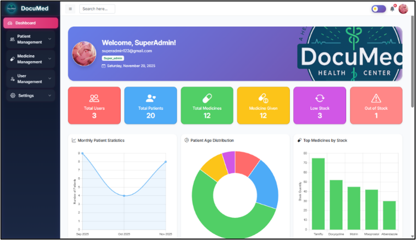
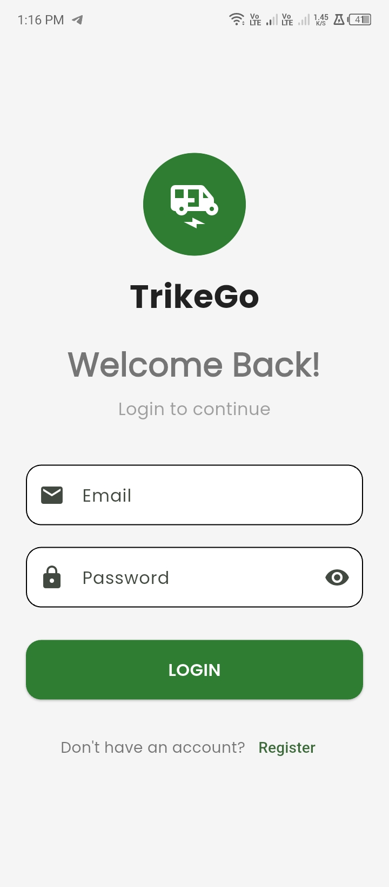

Programming
PHP · Java · JavaScript · Dart · HTML5 · CSS3 · SQL
I'm Julius Alison G. Chua, a BSIT graduate majoring in Application Programming, with hands-on experience in web development, hardware maintenance, troubleshooting, and technical support.
ABOUT ME
I am a motivated BSIT graduate majoring in Application Programming with practical experience from an academic practicum at Baler Municipal Police Station.
My experience includes diagnosing computer and software issues, configuring printers, managing digital documents, and supporting office personnel. I also developed DocuMed, a digital records and medicine tracking system, as my capstone project.
I enjoy solving problems, learning new technologies, and turning requirements into useful and organized software.
Major in Application Programming
2024 — 2026 · Cum LaudeWith Honors
2022 — 2024SKILLS
PHP · Java · JavaScript · Dart · HTML5 · CSS3 · SQL
MySQL · phpMyAdmin · Relational Database Design
Bootstrap · Flutter · Firebase · Responsive Interfaces
Hardware & Software Troubleshooting · Windows · BIOS · Printers
VS Code · Android Studio · XAMPP · Git · GitHub
Microsoft Word · Excel · PowerPoint · Document Management
PROJECTS

Health Center Digital Records & Reporting with Medicine Tracking
A web-based system designed to improve patient information management, medicine inventory tracking, revisit records, and report generation for a local health center.

Tricycle Booking Application
A mobile application project created to strengthen practical knowledge in mobile development, authentication, and booking workflows.
EXPERIENCE
Provided hands-on IT and office technology support across multiple offices.
05 · CONTACT
I'm open to entry-level IT opportunities, technical support, QA, and software-related roles.